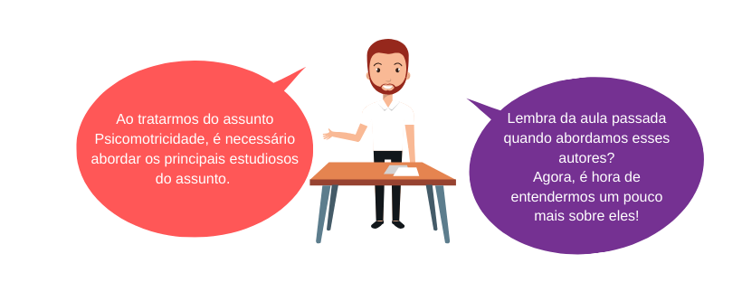
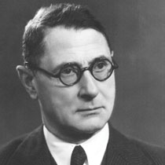
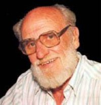
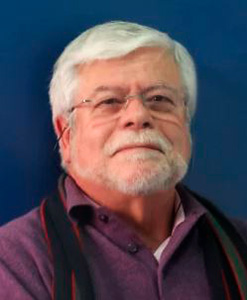
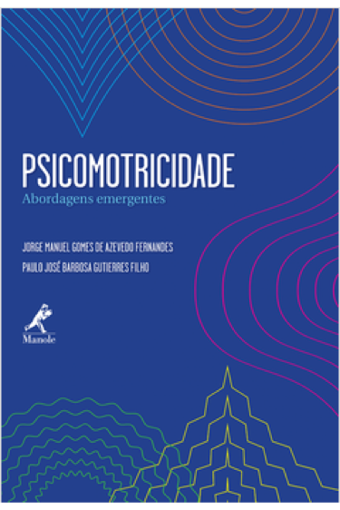

Psicomotricidade
Unidade 1 | Aula 2

Disciplina | Psicomotricidade

Conhecer os principais estudiosos que contribuíram e que contribuem para o desenvolvimento da área de conhecimento Psicomotricidade.

psicomotricidade, história e origem da Psicomotricidade

Em 1907, Ernest Dupré, renomado psiquiatra francês, enfatiza a relação psiquismo-motricidade, evidenciando o paralelismo psicomotor.
Ele é considerado o principal iniciador do estudo da Psicomotricidade na criança. Seus primeiros trabalhos constituíram o início de uma elaborada reflexão sobre os movimentos corporais.
Sua ideia de "paralelismo psicomotor" iria predominar durante muitas gerações.
A partir de 1925, são relevantes os trabalhos de Henri Wallon, enfatizando o comportamento tônico ligado à emoção e à estruturação do caráter. Além daqueles que consideravam o movimento como a primeira estrutura de relação com o meio.
Dupré e Henri Wallon estão na origem da Escola Francesa de Psicomotricidade.
Henri Paul Hyacinthe Wallon nasceu em Paris, França, em 1879.
Em 1902, Wallon se formou em Filosofia, formou-se também em Medicina e Psicologia.
Em 1920, Henri se tornou professor na lendária universidade de Sobornne, na França. Lá, ele foi encarregado de ministrar conferências sobre Psicologia da Criança.
Henri Wallon também lecionou em outras instituições e foi o primeiro teórico reconhecer a importância da afetividade no ensino infantil.

Um dos pioneiros no estudo da Psicomotricidade, salientava a importância do aspecto afetivo como anterior a qualquer tipo de comportamento. Existe, para ele, uma evolução tônica chamada de “diálogo corporal” e que constitui “o prelúdio da comunicação verbal”. Este diálogo corporal é fundamental na gênese psicomotora.
Wallon afirma que é sempre a ação motriz que regula o aparecimento e o desenvolvimento das formações mentais. Portanto, na evolução da criança, estão relacionadas a motricidade, a afetividade e a inteligência. O movimento, portanto, assume grande significação.
(OLIVEIRA: 2007).
A partir da década de 30, são incorporadas outras noções decorrentes de pesquisas no campo da Psicologia e da Psicanálise. Destacam-se as contribuições de Jean Piaget (1936) nas áreas da Psicologia e da Biologia, inter-relacionando as fases de desenvolvimento corporal, cognitivo, afetivo e social.
Estudando as estruturas cognitivas, Jean Piaget descreveu a importância do período sensório motor e da motricidade, principalmente antes da linguagem, no desenvolvimento da inteligência. Foi um dos estudiosos que mais se preocupou com as relações entre a motricidade e inteligência.
Toda inteligência, segundo Piaget, é fruto de experimentações sensoriais, portanto de base motora, que forma as primeiras aprendizagens da criança, das quais ela usará para seu desenvolvimento.
(ORTIZ: 2011).
Considerado o pai da Psicomotricidade Relacional, uma vertente da Psicomotricidade que dá ênfase aos aspectos afetivo-emocionais e relacionais do ser humano, André Lapierre faz parte dessa galeria de autores importantes.
A Psicomotricidade Relacional, segundo o próprio Lapierre, consiste em criar um espaço de liberdade propício aos jogos e brincadeiras.
O objetivo é fazer a criança manifestar seus conflitos profundos e vivê-los simbolicamente.
No âmbito educativo, esse tipo de atuação serviria de precaução contra o surgimento de distúrbios emocionais e motores.

Vitor da Fonseca é Professor catedrático agregado da Faculdade de Motricidade Humana da Universidade de Lisboa, ex-docente no seu Departamento de Educação Especial e Reabilitação, e Mestre em Dificuldades de Aprendizagem pela Universidade de Northwestern (Evanston – Chicago).
Especializado em Intervenção Cognitiva, Dificuldades de Aprendizagem e Psicomotricidade.
Tem livros e artigos publicados em vários domínios desde a psicomotricidade, à antropologia, às perturbações do desenvolvimento, às dificuldades de aprendizagem, à estimulação precoce, à educação especial, à psicopedagogia, à neuropsicologia e à educação e reeducação cognitiva.

Como você pôde ver, procuramos trazer alguns estudiosos do assunto.
As contribuições desses autores foram de fundamental importância para que a Psicomotricidade pudesse chegar onde chegou.
Um bom desenvolvimento psicomotor proporciona
um melhor desempenho de nossas crianças.
Devemos estar atentos, quando estivermos com nossos pequenos, em seu dia a dia, inclusive, em relação a outros aspectos como a cognição.

Observem nossas crianças hoje. A tecnologia e a diminuição dos espaços públicos para atividades de lazer estão contribuindo cada vez mais para algo que temos visto com mais frequência,
a diminuição do movimento corporal na criança.
O ato motor já não é tão evidente como antes. Isso pode contribuir negativamente no desenvolvimento motor.
Fonte: Danilo Sabrosa Barroso
FONSECA, Vitor. Psicomotricidade, Perspectivas Multidisciplinares. Porto Alegre: ARTMED, 2004.
MARINHO, Hermínia Regina Bugeste, JUNIOR, Moacir Ávila de Matos, FILHO, Nei Alberto Salles, FINCK, Silvia Christina Madrid. Pedagogia do Movimento, Universo Lúdico e Psicomotricidade. Curitiba: IBPEX, 2007.
MASSON, Suzanne. Generalidades sobre a Reeducação Psicomotora e o Exame Psicomotor. São Paulo: Manole, 1985.
OLIVEIRA, Gislaine de Campos. Psicomotricidade, Educação, Reeducação num Enfoque Psicopedagógico. Petrópolis: Vozes, 2007.
ORTIZ, Fernanda Ros. A Psicomotricidade no Estágio Sensório Motor – um olhar para o Desenvolvimento Infantil. Revista Educação- vol 14 n 18 pág.127 – 138. Disponível em: https://www.portaleducacao.com.br/conteudo/artigos/educacao/uma-breve-biografia-de-henri-wallon/50839. Acesso: em 10/06/2019.
Psicomotricidade – Abordagens Emergentes | Jorge M. G. A. Fernandes
Capítulo 9: Formação Corporal do Psicomotricista – uma necessidade impostergável. Pág. 123 131A leitura do texto nos remete a refletir sobre a importância da formação do profissional que atua com a psicomotricidade. Atente-se para os campos de atuação e os níveis de intervenção desse profissional.

A psicomotricidade como ferramenta de Aprendizagem | Lidiane Rodrigues Dorneles e Luciana Borba Benetti
O texto nos apresenta outros autores e estudiosos da área psicomotricidade e sua importância na aprendizagem.
Foto Henri Wallon. Disponível em: http://www.nerj.rj.saude.gov.br/albertsabin/?attachment_id=630 Acesso em: 30/01/2020.
Foto André Lapierre. Disponível em: https://www.skoob.com.br/autor/6187-andre-lapierre. Acesso em: 30/01/2020.
Foto Vitor da Fonseca. Disponível em: https://congressopsicomotricidade.com/wp-content/uploads/2018/05/vitor-da-fonseca-pre.jpg Acesso em: 30/01/2020.
Biografia de Wallon. Disponível em: https://www.portaleducacao.com.br/conteudo/artigos/educacao/uma-breve-biografia-de-henri-wallon/50839. Acesso em: 10/06/2019.
História da motricidade. Disponível em: https://psicomotricidade.com.br/a-historia-da-psicomotricidade-e-da-abp/. Acesso em: 10/06/2019.
A PSICOMOTRICIDADE COMO FERRAMENTA DA APRENDIZAGEM. Disponível em: https://periodicos.ufsm.br/remoa/article/viewFile/6186/3686 Acesso em: 08/02/2020.
Infográfico de Danilo Sabrosa Barroso. Disponível em: https://slideplayer.com.br/slide/7315156/ Acesso em: 09/02/2020.
Copyright©2020, Faculdade OPEN. Todos os direitos reservados.
É proibida a reprodução e distribuição total ou parcial deste material, com ou sem fins lucrativos, em qualquer meio, sem prévia autorização.